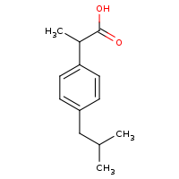
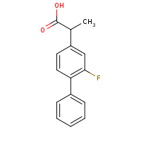
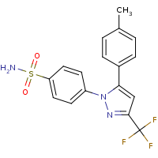

CYCLOXYGENASES
Cyclooxigenases are enzymes involved in the production of thromboxane or
prostaglandin from the precursor arachidonic acid.Cycloxygenases inhibitors
are used to relief the symptoms of inflammation and pain.
Cyclooxygenase
Or for a more focused study of the pharmacological problem
PaperCOX1/COX2
Actually there are some non specific inhibitors of the COX1 and
COX2 enzymes but there are also some specific inhibitors of the COX2.
COX1/COX2 inhibitors (non-specific)
- Ibuprofen 
- Flurbiprofen 
COX2 specific inhibitors
- Celecoxib 
- Rofecoxib (that isn’t anymore in the market because have severe
side-effects on the hearth)
COX1 AND COX2 DIFFERENCIES
drug-design-workshopCOX
● The problem of the specificity is due to the aminoacid 523, in
COX1 is a Isoleucine (ILE), in COX2 this is a Valine (VAL).
● Specificity is important because the COX1 is involved in the
protection of the gastric mucosae and the blood coagulation,while
COX2 is the direct responsible of pain and inflammation. So the
pharmacological problem is find a drug able to inhibit selectively COX2,
to do this we must find a drug with a high affinity for COX2 and a lower
affinity for COX1
Briefly:
- inhibition of COX1 -> side effects
- inhibition of COX 2 -> therapeutic effects
GENERAL INFO ABOUT DOCKING
● To do the docking between COX and a drug that target one or both the
isoforms we need:
- COX1 and COX2 structures in PDB format, that
can be searched in the RCSB PDB database (possibly human structures, for
COX1 the PDB code is 6Y3C, for the COX2 i advise to downolad the 5IKV,
that is a human COX2 bound to the Flufenamic acid that is molecule
similar to the Flurbiprofen, so this file can give us general
information about the binding site)
RCSB-PDB
- Ligand structures
can be found in the DrugBank datbase, you can downoload the PDB from
DrugBank, visualize the molecule on Chimera and also save the molecule
in a new format by click on “Save” and then “Save as”, so you can save
the molecule in the more useful format for your needs (MOL2 format for
SwissDock, PDB format for PatchDock)
DrugBank
- Definition of the binding site (a file txt with the
amminoacids of the binding site if we want to use PatchDock; the XYZ
coordinates of the binding site if we use SwissDock, but this passage
will be explained better in the following points.
- A software that allow to visualize, analize and eventually make some
modifications on the target (for example delete some portions of the
protein while select other regions intersting for the docking). With Chimera
we can visualize the target (PDB file), the ligand (MOL2 or PDB file)
and the results of our docking (in PatchDock are separeted PDB files
while in SwissDock we can navigate through the different models thanks
to the WiewDock window). Some trick that can be useful to know in
Chimera are: "Tools/Sequence" choose a specific aa or some aminoacids on
the primary structure and mark the with a colour; is possible to open
different files at the same time and superimpose them (for example
open the docking and the crystallographic structure for the
same ligand.
1.PREPARATION OF THE TARGET
We want to obtain only one chain of the enzyme (chain A) and to do this:
- Open your PDB file with Chimera, you can use
Chimera as an interface, so you can go to "Fetch by ID" ,
select PDB and put in the box the ID
of the target structure (for example you can write 5IKV and Chimera give
you the COX2 bound to the Flufenamic Acid, another NSAID). Or if you had
previously downloaded the PDB file you can directly open this file (i
recommended this option because PDB files are not only intersting to
visualize but also to read as text; you can individuate the coordinates
of a specific atom or you can read other information on the header of
the file, so i advise to download these files and put them on a folder
for further utilities)
- Delete all the other chains by clicking on “Select”,
than “Chain”, so you can select the other chains
- You can also click on “Select” and go to “Residues” , here
we can select for example HOH, NAG and also the LIG if we have
downloaded a COX bound to a ligand. If you want to delete these
atoms/molecules after the selection we can click “Actions” then
click “Atoms” and then select “Delete”.
- Than save the structure by click “Save” and select “Save
as PDB”
2a PREPARATION OF THE BINDING SITE: SwissDock
● SwissDock: in this software the extra parameters are
the X,Y,Z coordinates of the center of the binding site and also the X,Y,Z
sizes; to form a cube in which the ligand can be docked.
● To find the coordinates we can start from COX bound to a ligand:
- Click on “Select” and go to “Residue” and
click on LIG.
- Click to “Select” and go to “Zone” and
select a zone of 5 Angstrom, then click on “Selected atoms only”
- Save the binding site by click to “Save”, and then
select “Save PDB” and also click on the option “save
selected atoms only”
● The coordinates of the ligand (possibly take in consideration an
atom in the center of the molecule) ca be used as the coordinates of the
center. To determine the size I advise to wiew the selected atoms on Chimera
and note down what are the aminoacids that limit the binding site, and then
write the coordinates of these and calculate the differences between these
coordinates. These calculation doesn’t need to be very precise but are
useful to approximate the X,Y,Z sizes.
2b PREPARATION OF THE BINDING SITE-PatchDock
PatchDock
● We can use the PDB file of the binding site that we have made before. Then
read the PDB file and write down all the aminoacids’numbers. Then write a
txt file with the number of the aminoacid and the chain of each aminoacid
(obviously in this case all the aminoacids belong to chain A)
example: cox2bindingsite
(you can use the same txt file for both COX1 and COX2 since the
aminoacids involved are the same)
3. SUBMIT THE DOCKING
In target selection you can click on “Choose file”/”Scegli file” and
pick the PDB file in the SwissDock software
In ligand selction you have to pick the file of the ligand/drug in the MOL2
format
In description you have to write your e-mail and the job name (possibly
choose a job name that remind you with which molecule you have done the
docking (e.g. FluCox2 for a docking between Flurbiprofen and COX2)
Then you can click on “Show extra parameters” and then:
- select the docking type (Very fast or Accurate in base of your
needs)
- the coordinates of the binding site.
So at the end you click on “Start Docking” and then you receive a
mail that the work is started correctly and when the job is completed you
will receive another mail with the link of your results.
4. RESULT’S ANALYSIS
- Remember that before the result's analysis we must know quite
precisely the pharmacological problem, otherwise we cannot compare the
data with a sort of "expected result" that derive from a
theoretical knowledge
- You can visualize your results with the right button of your
mouse on the icone over the “Launch UCSF Chimera”, then you
select “Save link”, than you can open your link by using UCSF
Chimera.
- When you open the link with Chimera also opens the WiewDock
window. On the WiewDock you can select one of the several
models of docking and visualize these on Chimera. So the big advantage
of SwissDock is the fact that through the WiewDock you can visualize
rapidly all the 256 model that the docking engine give us, and for each
of these see all the thermodynamic values (the docking score is a
consensous score of all these numbers)
- You can save a Chimera session, if you go to "File" and than to "Save
session as" and you can save your session as a .py file that you can
open whenever you want (the results placed on SwissDock expire after 14
days so we must save them in a folder; obviously for PatchDock we
download a set of PDB file when we collect the result so we not need to
make this procedure)
Example: in the following image is possible to see: in green the
Celecoxib, its position
result from the docking, more precisely is the best pose purposed by the
docking engine; in red the Flufenamic
Acid in the
cristallographic structure, in this way we verify that our ligand bind the
correct binding site. In blue, at the right, is placed the VAL523 that, since is the only
variant on the binding pocket between COX1 and COX2, is important for the
selectivity of the drug.